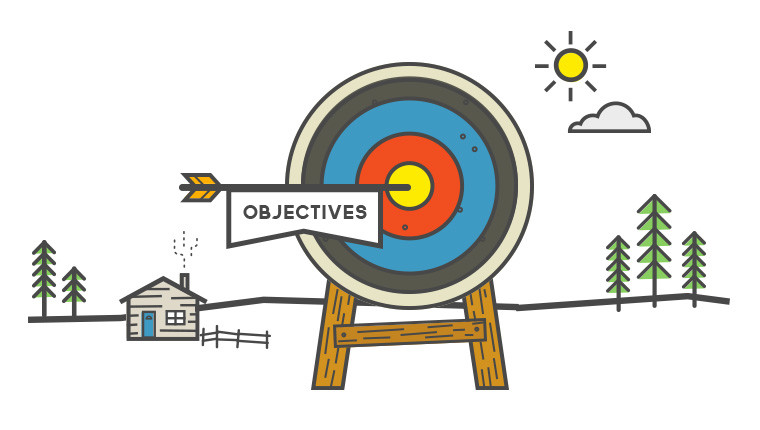

ISM4641: Python for Business Analytics
Lecture 1: Introduction to Python for Business
February 1, 2025
Introduction
Today’s Objectives
- Understand why Python is a crucial tool for modern business analytics.
- Get comfortable with Google Colab, our cloud-based coding environment, including notebook cells and basic Markdown formatting.
- Learn how to make Notebooks looks great using Markdown
- Grasp the fundamental building blocks of Python: variables, data types, operators, and type conversion.
- Write your first lines of Python code and experience the thrill of telling a computer what to do! (well, maybe it’s not a thrill, but useful skill)

The Case for Python
Why Should a Business Student Learn to Code?
The answer is simple: data is everywhere, and the ability to understand and use it is no longer optional, it’s essential.
Data is the New Oil, and Python is the Refinery:
Competitiveness Demands More Than Just Spreadsheets:
Industry Trends Point to One Thing -> Automation and AI:
Imagine the Possibilities
- Marketing: Optimize campaigns, target customer segments, personalize experiences.
- Finance: Forecast sales, assess risks, optimize portfolios.
- Operations: Streamline supply chains, identify bottlenecks, predict maintenance needs.
- Human Resources: Find top talent, improve retention, build diverse teams.
Why Python?

- Versatile: Like a Swiss Army knife, it handles many tasks.
- Easy to Learn: Readable and intuitive syntax.
- Treasure Chest of Libraries: Pre-built modules (Pandas, NumPy) for data analysis.
- Large Community: Tons of resources and support.
- Industry Standard: Employers love it!
Python: The Perfect Tool for Business
- Analyze customer data to identify trends and preferences.
- Build financial models to forecast revenue and manage risk.
- Optimize operations by analyzing supply chain data.
- Automate repetitive tasks to improve efficiency.
- Create compelling data visualizations to communicate insights effectively.
Google Colab
Your Cloud-Based Coding Playground
- Zero Setup: Runs in your browser.
- Free Power: Access to Google’s computing resources (GPUs).
- Teamwork Made Easy: Real-time collaboration.
- Everything in One Place: Jupyter Notebooks combine code, output, and text.

Getting Started with Colab
Following along with the professor...
- Open Colab: colab.research.google.com
- Sign in with your Google account.
- Create a “New notebook”.
Navigating Colab
- Notebook Cells:
- Code Cells: Write and execute Python code.
- Text Cells: Add explanations using Markdown.
- Running Code: Click the “Play” button or press
Shift + Enter. - Adding Cells: Use the “+ Code” and “+ Text” buttons.
Common Shortcuts
- Run cell (Ctrl + Enter)
- Run cell and add new cell below (Alt + Enter)
- Run cell and goto the next cell below (Shift + Enter)
- Comment current line (Ctrl + /)
- add a cell above (Ctrl + M + A)
- Add a cell below (Ctrl + M + B)
- Change cell to code (Ctrl + M + Y)
- Change cell to markdown (Ctrl + M + M)
Markdown: Making Your Notebooks Look Good
- Headings:
#,##,### - Emphasis:
- Italic:
*text*or_text_ - Bold:
**text**or__text__
- Italic:
- Lists:
- Unordered:
* Item - Ordered:
1. Item
- Unordered:
- Links:
[Text](URL) - Code:
- Inline: `code`
- Block: ```{python} # code here ```
The Building Blocks of Python
What we will cover today:
- Variables: Labeled containers for data.
- Data Types: The kind of information a variable holds (text, numbers, booleans).
- Operators: Symbols to perform operations on data (math, comparison, logic).
- Type Conversion: Changing data types.
- Comments: Explaining your code to humans.
Variables: Giving Names to Your Data
- Use the assignment operator (
=) to assign values to variables. - Choose descriptive variable names.
Once a variable is defined, you can use it later in your program. Here we use the print function to display the contents of each variable.
We will see the print function being used more in later classes. For now, note that you can provide not only variables, but text.
For very long lines of code, we can specify to continue on the next line as folllows:
Why are Variables Useful?
- Organization: Make your code easier to read.
- Reusability: Refer to values multiple times.
- Flexibility: Easily change values later.
Rules for Naming Variables
- Start with a letter or underscore.
- The rest can be letters, underscores, or numbers.
- Case-sensitive (
myVaris different frommyvar). - Cannot use Python keywords (e.g.,
if,for,while).
Data Types: What are you storing?
- String (
str): Text (e.g.,"Hello",'ISM4641'). - Integer (
int): Whole numbers (e.g.,10,-5,0). - Float (
float): Decimal numbers (e.g.,3.14,-2.7). - Boolean (
bool):TrueorFalse.
Checking Data Types
Python has a built-in function called type that we can use to identify the data type of a variable.
. . .
Why are Data Types Important?
- Correct Operations: Python needs to know the type to perform the right operations.
- Memory Management: Different types use different amounts of memory.
- Data Integrity: Ensures your data is stored and processed accurately.
Operators: Doing Things with Data
- Arithmetic Operators: Math (
+,-,*,/,//,%,**). - Comparison Operators: Comparisons (
==,!=,>,<,>=,<=). - Logical Operators: Combine conditions (
and,or,not).
Arithmetic Operators
Comparison Operators
Logical Operators
Business Scenario: Discount Eligibility
Type Conversion: Changing Data Types
int(): Converts to an integer.float(): Converts to a float.str(): Converts to a string.
Why is Type Conversion Important?
- Performing Operations: Can’t add a string and a number directly.
- Data Input: User input often comes as strings.
- Data Compatibility: Ensures different parts of your program work together.
Your Turn!
Practice Exercises!
Open a new notebook in Google Colab and try these exercises.
Exercise 1: Customer Profile
Create variables for as persons name, their age, the city they live in, and if there are a member:
. . .
- Name: “Alice Smith”
- Age: 30
- City: “New York”
- Is a member: True
. . .
Print the values and their data types.
Exercise 2: Order Calculation
Calculate the total cost given price per item, quantity, and discount:
. . .
- Price per item: $25.50
- Quantity: 5
- Discount: 10% (0.10)
. . .
Print the total cost after the discount.
Exercise 3: Shipping Eligibility
Determine if eligible for free shipping given based on the the rule that members with orders over $50 get a discount:
. . .
- Order total > $50
- Customer is a member
. . .
Print True if eligible, False otherwise.
Exercise 4: Markdown Practice
Create a text cell with:
- Main heading: “My Business Analytics Notes”
- Subheading: “Class 1: Introduction to Python”
- Bulleted list: Variables, Data Types, Operators
- Bold: “Python is essential for data analysis.”
- Italic: Data drives business decisions.
Exercise 5: Type Conversion
purchase_total_str = "125.75"- Convert to a float:
purchase_total_float - Add shipping cost of $5.99
- Print the final total.
Conclusion
- You’ve taken your first steps into Python for business analytics!
- We covered variables, data types, operators, type conversion and comments in Google Colab.
- Next class: Conditional statements and loops.
- Get ready to unlock the power of data!
Tasks for This Week
- Practice, practice, practice
- learning to program is like learning a language, or playing a sport
- you can NOT cram the night before you need the skill!
- It’s not hard if you do a little everyday - make it a habbit
- Practice using the problem set for this week.
- Try to complete each question before looking at the solution
- Join extra help sessions on Saturday’s (1 to 4pm)
- learning to program is like learning a language, or playing a sport
- Complete Assignment01
- Simple assignment to help you get started
- Prepare for Quiz01 next class
- In-class quiz covering the content from this week (Week01)
Questions?
ISM4641 Python for Business © 2025 Tim Smith
Comments: Explaining your code
# This is a comment